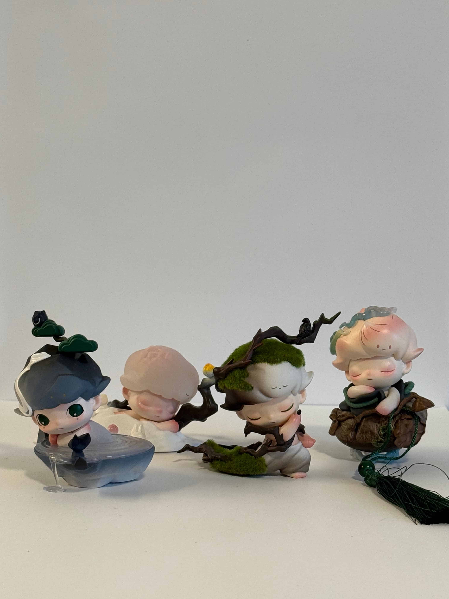
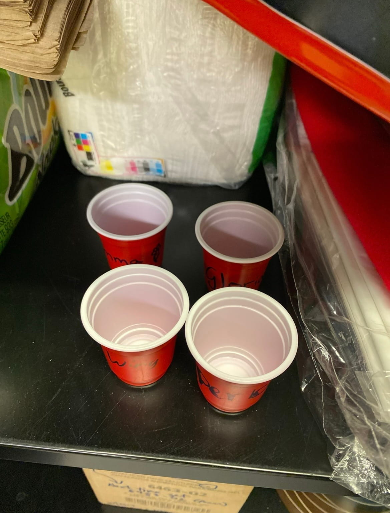

My partner’s image is a collection of PopMart figures from the series Dimoo. Each of the figurines are positioned in an interesting way where one is peaking behind the other. What is most interesting about the image is that the image is taken from the perspective of meeting eye-level with the figurines. In other words, we can see the background and the surface which they have been placed on. This further also creates depth as we see with the shadows formed from the figurine placements.

Nathan Salas, 2026
As each figurine is a different design, I can easily look from left and right to observe the subtle changes and visualize the entirety of the photo simply from looking across horizontally. The mystery I find about this image is I wonder what the design of each Dimoo character correlates to. As there are multiple series and different possible options that you can get, I am curious to know more about which series they are from and what the background is behind the character. From my observations, I believe they are mimicking a mountain, nature scenes and different scenery you can find commonly outdoors.
I believe a way to enhance the photo to better tell the story of each character, imagining closeup shots of each figurine in different orientations or perhaps putting them in different scenery to represent their figure, that is not against a white wall, can contribute to the story and express them individually. For the wide shot of all figurines, I think more spacing or adding them in a more distinct position to allow all figurines to be viewed at a glance will allow for easier processing and taking in their forms.
Part Two:
The image I am most excited about is of small red shot glasses that are left behind in the drawer at my workplace from my past coworkers. After graduating in the past year, these cups remind me of the fun memories of enjoying potlucks and endless discussions with my coworkers. We frequently cheered for Arizona drinks every potluck and shortly it had become a tradition. This is one of the items that are related to my archive of small memories of other coworkers that have been left behind.

Pachia Yang, 2026
I hope to display a variety of objects from the workplace or that have been gifted to me and tell a story about the amazing coworkers that I have been honored to meet and had the time to know. I believe that this will tell a little bit about my personality in terms of the sentiments and values I hold dear in relationships, pondering about memory and how that has developed me into the person I am. As this was my very first job, there were many uncertainties and fears that also followed. Having my coworkers along my side who have come and gone, sharing their stories with me and forming a strong connection with each other is something that I hold dear and will continue to take with me for a long time.
Moving forward, I think I can elevate and bring more visual interest into my photos by better rearranging the objects to be more apparent. For example, instead of prompting the cups so high, I would make sure to take the image from a lower level and display the names on the club to be viewable. I might also even have them sitting down rather than upright to tell a more rhythmic and provide movement in my photo.
Visual Thinking Strategies
I read the article 10 Intriguing Photographs to Teach Close Reasing and Visual Thinking, and noticed how important it is in the presentation of our information. Precisely, the way that we interpret and take in a picture can be key in helping us notice details and share them with each other, some which we may have not seen before. By closely analyzing a photo we can notice what we see and also come to different conclusions about the context of the image, this can be done prior to us finding out what the real background of the image is. Sharing it also elevates conversation and allows us to further connect and make more points about relationships in the photo.
This made me consider how I can tell a story in my own upcoming assignment, Everyday Photo to compose the key details with captions. I won’t reveal the context yet and allow the user to have time to interact and preview the images.
A website that does this well is Sleep Well Creative, it encapsulates the importance of sleep with visually appealing images, from text and images appearing as you scroll down, with interactive objects where items flip as you click them, and a clock timer that sways back and forth. Text also fades in and out as you continue scrolling, there are visible overlays that transition over the other to present new information, some visuals on the page begin to be swiped left too off from the screen as you scroll. The clear structure of having text appear in relation to the background, allowed me to easily read and chunk information because of the hierarchy in text.
Overalys Design Pattern Research
After reading the article Best Practices for Modals/Overlays/Dialog Windows, I learned that modal windows can be a strategic and great way to grab your user’s attention and also request them to take an action. However, there are also strict rules that must be followed in order to design effective modal designs. In fact, it is most useful when it provides supplemental aid or explanation to the current page such as providing more context through imagery. This made me realize that modals have always been uniquely sized and are most effective when they do not take up the entire space on the screen.
Some forms that I have filled out in the past did not have clear indications of a cancel or undo button, which made me unsure of how I could exit the form. Due to this, it made me more likely to want to exit and stop filling out the form.
Furthermore, the way that we design modal windows is key in how responsive the user will be in interacting with it. Without clear indications such as where an exit button or cancel button is, this limits accessibility and can cause more confusion for the user. In support of this, a title will be important to describe what the modal window is concerned of. Action buttons will be the final piece that adds to show the user their available options to take, the primary button may stand out more provided it has a different shade of color. I remember learning in DES 112, how action buttons should evoke our users to want to press and submit; there should be no question as to what the action item is. We should keep these principles in mind for successful designs.
Form Design
After reading the article Best Practices for Form Design, I realized that the significance of creating forms can be much more complicated than it appears. The cognitive load in how a form appears all impacts a user’s readability and willingness to complete a form. This got me thinking about how much time and effort is put into designing forms. It also made me start thinking about how I can create an interactive but easy to deconstruct form for my upcoming Madlib assignment.
During my summer internship, I learned about the significance of radio buttons. My mentor and I discussed the pros and cons of using a checklist vs. radio buttons for the option a user can click “Yes” or “No” in an application form. We agreed the radio buttons would be more ideal for this requirement, similarly to how the radio buttons are best for when there are less than six options to choose from. For the input fields of zip code, names, and address being of varying character lengths, I also had a difficult time figuring out how large I should extend each box. Initially starting off with the same size, I came to realize this created awkward empty space. The article mentions that the input fields should be adjusted to fit the same size as the expected characters to fill the box. When I included this into my own design, I noticed the application form was much easier to digest.
An example of good design principles I’ve seen in a form is Calendly. There is a prominent action button of “Next” appearing to the right to confirm they’ve selected the option. All the labels for the input fields also appear strictly above, creating a simple but easy form to complete.